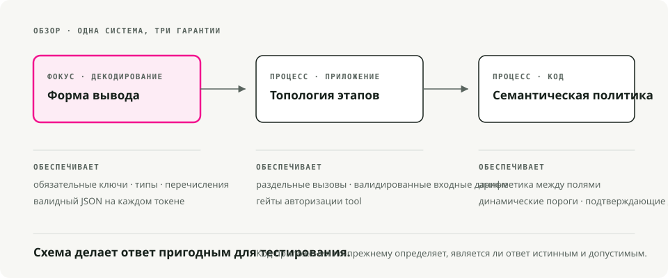
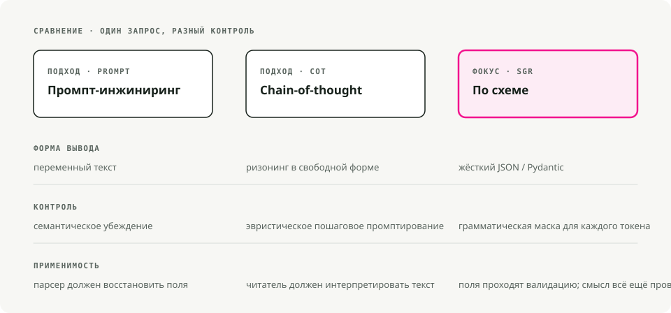
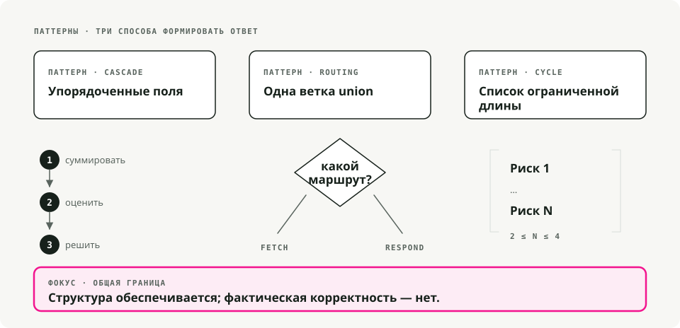
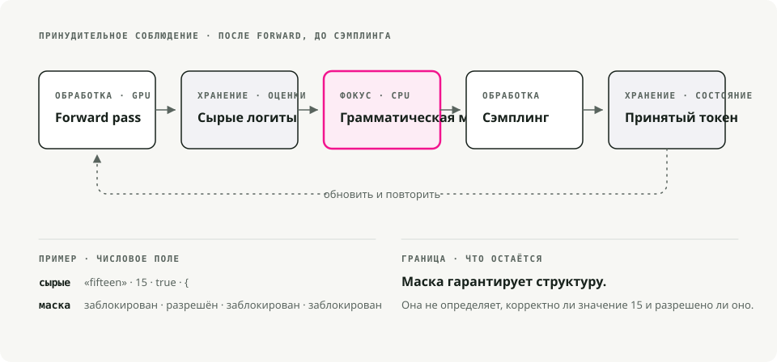
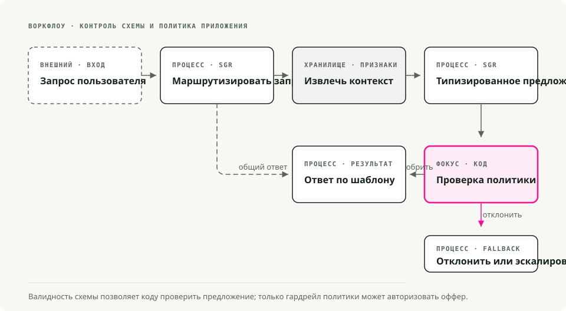

Автоматический перевод
Эта статья была автоматически переведена с оригинальной английской версии.
Разумование с использованием схемы в vLLM: структурированные выходные данные с помощью xgrammar и Pydantic
Цикл повторных попыток — это своего рода признание неудачи. Он говорит о том, что разработчик ожидал от модели возврата корректного JSON, но этого не произошло, поэтому он решает попробовать снова. Большинство кодов агентов на основе больших языковых моделей, с которыми мне доводилось работать, в значительной степени опираются на механизмы повторных попыток, и всё равно результаты часто оказываются некорректными, из-за чего кто-то обязательно настраивает для этого оповещения.
Метод разумования с использованием схемы (Schema-Guided Reasoning, SGR) позволяет избежать необходимости в циклах повторных попыток за счёт строгого соблюдения схемы на уровне токенов. Вы определяете структуру логических операций в виде схемы Pydantic, и движок инференса фильтрует любые токены, которые могут нарушить эту схему, ещё до генерации ответа. Таким образом, выходной результат корректен по своей природе, а не благодаря повторным попыткам.
Кратко. SGR применяет ограниченную декодировку для фиксации вывода LLM в рамках схемы Pydantic, которую вы контролируете. Сочетая её с бэкендом xgrammar от vLLM, вы получаете всегда корректный JSON при практически нулевых задержках. Ринат Абдуллин Написано в 2024 году. Вместо того чтобы позволять модели свободно завершать текст (что может привести к несогласованности или двусмысленности), ей предоставляется строгая шаблонная структура, которая определяет:
- последовательность шагов, через которые она должна пройти, чтобы избежать пропуска этапов анализа;
- порядок этих шагов, обеспечивающий логическую последовательность от данных к решению;
- области, на которые следует сосредоточить внимание, чтобы глубина анализа достигала наиболее важных аспектов.
Можно рассматривать это как когнитивный чек-лист, который модель обязана соблюдать.

Почему важен SGR
При определении схемы с такими полями, как churn_analysis, margin_math, и max_discount_percentМодель должна заполнять их в определённом порядке. Она не может сразу перейти к принятию решения о скидке, не проведя сначала анализ.
Это обеспечивает:
- воспроизводимость логики при многократных запусках;
- возможность аудита результатов, поскольку каждый шаг можно проверить;
- промежуточные поля, по которым можно оценивать работу модели на тестовом наборе данных;
- более компактные модели, которые становятся более пригодными к использованию, так как схема задаёт правила, которые в противном случае модели пришлось бы самостоятельно выучивать;
- повышение точности на 5–10%. часто сообщается в рабочих нагрузках в производственной среде
SGR против подхода «цепочка мыслей» против инжиниринга промптов
Эти три подхода в основном отличаются степенью ограничения модели.

| Функциональность | Инжиниринг промптов | Цепочка мыслей | Расчёты с использованием схемы |
|---|---|---|---|
| Структура вывода | Текстовая переменная | Проза свободного формата | Жёсткий формат JSON/Pydantic |
| Механизм управления | Семантическое воздействие («Пожалуйста, выведите JSON») | Эвристическое формулирование запросов («Давайте будем рассуждать по шагам») | Ограниченная декодировка (на основе грамматики) |
| Поток логики | Модель определяет | Модель определяет | Разработчик определяет (топологию схемы) |
| Проверяемость | Низкий (требует парсинга) | Низкий (требуется прочтение текста) | Высокий (проверка на уровне поля) |
| Интеграция | Сложно (парсинг регулярных выражений) | Простой случай (десериализация нативных объектов) | |
| Уровень ошибок | Высокий (разнообразие форматов) | Умеренный (галлюцинация формата) | |
| Требования к модели | Строгое соблюдение инструкций | Сильные способности к логическому мышлению | Работает также с более мелкими моделями. |
Инжиниринг промптов: семантическое воздействие
Please analyze the customer data and output your response as valid JSON
with the following structure: {"discount": <number>, "reason": <string>}
Be careful with the formatting!
Вы рассчитываете на то, что понимание моделью понятия «выходной JSON» будет сильнее её склонности к разговорному стилю. Обновление модели, изменение параметра температуры или использование другого примера в формате нескольких шагов могут нарушить работу вашего парсера.
Цепочка мыслей: улучшенное рассуждение, проблема сохранения структуры
Let's think step by step:
1. First, I'll analyze the customer's churn risk...
2. Then I'll calculate the margin...
3. Therefore, I recommend a 15% discount.
CoT повышает точность рассуждений, но ухудшает структурированность результатов. Получаемый текст имеет непредсказуемую структуру, из-за чего его практически невозможно надёжно парсить. Обычно приходится выполнять второй вызов LLM лишь для извлечения структурированных данных.
class PricingLogic(BaseModel):
# 1. Data Analysis (must complete before decision)
churn_analysis: str = Field(..., description="Analyze churn_probability")
financial_analysis: str = Field(..., description="Analyze cart_value and margin")
# 2. Math Enforcement (explicit calculation)
margin_math: str = Field(..., description="Calculate: 'Cart $X * Y% = $Z'")
# 3. Decision Constraint (bounded by prior analysis)
max_discount_percent: float = Field(..., description="Max allowed discount")
# 4. Final Output
offer_code: str
customer_message: str
Модель не может вывести результат. max_discount_percent до тех пор, пока churn_analysis, financial_analysis, и margin_math Они заполняются. Схема обеспечивает соблюдение порядка выполнения логических операций.
Шаблоны SGR
SGR включает три основных шаблона, которые объединяются для формирования более сложных рабочих процессов.

1. Каскад: последовательные шаги рассуждения
Каскад обеспечивает соблюдение определённого порядка выполнения рассуждений. Каждое поле должно быть заполнено до того, как будет обработано следующее.
from pydantic import BaseModel
from typing import Literal, Annotated
from annotated_types import Ge, Le
class CandidateEvaluation(BaseModel):
"""Evaluate a job candidate with enforced reasoning order."""
# Step 1: Summarize (forces context awareness)
brief_candidate_summary: str
# Step 2: Rate (bounded integer)
rate_skill_match: Annotated[int, Ge(1), Le(10)]
# Step 3: Decide (constrained choices)
final_recommendation: Literal["hire", "reject", "hold"]
Хорошо подходит для: оценки кандидатов, классификации документов, анализа соответствия стандартам, медицинской диагностики. Модель должна выполнять функцию написания текста. brief_candidate_summary Прежде чем модель сможет оценить вариант, необходимо сначала провести оценку, а прежде чем рекомендовать что-либо — сначала сделать рекомендацию. Коротких путей здесь нет.
2. Маршрутизация: семантическое операторное условие
Маршрутизация позволяет модели выбрать один из возможных путей из набора вариантов, что реализуется с помощью Union типы.
from pydantic import BaseModel
from typing import Literal, Union
class FeatureLookup(BaseModel):
"""Route to database lookup."""
rationale: str
tool_name: Literal["fetch_user_features"] = "fetch_user_features"
user_id: str
class GeneralResponse(BaseModel):
"""Standard response for non-pricing queries."""
tool_name: Literal["respond"] = "respond"
content: str
class RouterSchema(BaseModel):
"""The model must pick exactly ONE branch."""
action: Union[FeatureLookup, GeneralResponse]
Хорошо подходит для: классификации намерений, выбора инструментов, сортировки запросов на поддержку и распределения задач между несколькими агентами.
Этот Literal дискриминаторtool_name) заставляет модель выбрать один ветвь и заполнить только те поля, которые требуется для этой ветви.
3. Цикл: повторное рассуждение с использованием списков
Цикл принудительно заставляет модель генерировать несколько элементов, устанавливая при этом ограничения на их количество.
from pydantic import BaseModel
from typing import List, Literal, Annotated
from annotated_types import MinLen, MaxLen
class RiskFactor(BaseModel):
explanation: str
severity: Literal["low", "medium", "high"]
class RiskAssessment(BaseModel):
"""Generate 2-4 risk factors."""
factors: Annotated[List[RiskFactor], MinLen(2), MaxLen(4)]
Хорошо подходит для: оценки рисков, извлечения проблем, параллельных вызовов инструментов, многократного планирования. MinLen и MaxLen Ограничения требуют наличия от минимум 2 до максимум 4 элементов. В сочетании с механизмом маршрутизации это позволяет отправлять пакеты вызовов инструментов фиксированной длины.
Как заставить SGR работать: ограниченная декодировка
Приведённые выше шаблоны представляют собой просто схемы Pydantic. То, что делает их обязательными к выполнению, — это ограниченная декодировка (также называемая структурированным выводом).
Ограниченная декодировка модифицирует этап генерации токенов. Вместо того чтобы позволять модели свободно выбирать токены из своего словаря, движок применяет грамматическую маску, которая блокирует токены, нарушающие шаблон. Этот процесс происходит в движке инференса, а не в коде вашего приложения.
[!СОВЕТ] Для работы SGR не требуются «модели рассуждений» вроде o1 или DeepSeek-R1. Он хорошо функционирует с моделями, настроенными под выполнение инструкций, и особенно эффективен с моделями, полученными путём дистилляции из моделей рассуждений.
Провайдеры облачных сервисов, поддерживающие его
Большинство современных провайдеров больших языковых моделей предоставляют возможность структурированного вывода с использованием ограниченной декодировки:
| Провайдер | Поддержка |
|---|---|
| OpenAI | Структурированные выходные данные (включая Azure). GPT-5 использует JSON Schema через механизм llguidance |
| Google/Gemini | JSON Schema |
| Mistral | Собственный структурированный вывод |
| Grok | Структурированные выходные данные для нескольких моделей |
| Fireworks AI | JSON Schema |
| Cerebras | Структурированные выходные данные |
| OpenRouter | Зависит от поставщика нижнего уровня; соответствует структуре JSON Schema. |
Механизмы инференса, которые его поддерживают
Для самостоятельно развернутых моделей у всех основных движков имеется ограниченный бэкенд декодирования:
| Двигатель | Бэкенд |
|---|---|
| vLLM | xgrammar или рекомендации |
| SGLang | Основные положения, XGrammar, или llguidance |
| TensorRT-LLM | GuidedDecoding |
| Ollama | Структурированные выходные данные |
Почему в этой статье рассматриваются именно vLLM и xgrammar
Несколько причин:
- vLLM является наиболее широко используемым движком инференса для LLM с открытым исходным кодом, поэтому решения, разработанные здесь, легко могут быть адаптированы для других сред.
- xgrammar реализован на C++ и не вносит значимого влияния на задержку.
- API vLLM совместим с OpenAI, что позволяет сделать миграцию с облачных провайдеров дешевой.
- xgrammar поддерживает сложные вложенные схемы, объединения и рекурсивные структуры.
В следующем разделе рассматривается, как xgrammar фактически обеспечивает соблюдение схемы на уровне токенов.
Как xgrammar обеспечивает соблюдение схем
Эту часть необходимо понимать максимально точно, поскольку она влияет на способ отладки и настройки рабочих процессов SGR.

Где происходит маскировка
xgrammar изменяет выходные логиты после выполнения операции forward pass модели и перед процедурой сэмплирования. Он не меняет саму модель; он лишь фильтрует токены, которые могут быть выбраны.
Стандартный цикл инференса выглядит следующим образом:
1. Input tokens → GPU Forward Pass → Logits (probability scores for all ~128K tokens)
2. Logits → Sampling (temperature, top-p, etc.) → Next Token
3. Repeat until done
xgrammar «утекает» между шагами 1 и 2:
1. Input tokens → GPU Forward Pass → Raw Logits
2. Raw Logits → xgrammar Logits Processor → Masked Logits
3. Masked Logits → Sampling → Next Token (guaranteed valid)
4. Repeat until done
Модель по-прежнему вычисляет своё полное распределение вероятностей на GPU. Затем xgrammar запускается на CPU, где к этим логитам применяется маска битов перед процедурой выборки. Для недопустимых токенов их логиты устанавливаются в значение -∞, что делает их вероятность равной точно 0 после применения функции softmax.
Две фазы
xgrammar разделяет работу на этап компиляции и этап выполнения, и именно это обеспечивает высокую скорость работы.
Этап 1: компиляция грамматики — один раз на шаблон
# This happens once per schema
tokenizer_info = xgr.TokenizerInfo.from_huggingface(tokenizer)
grammar_compiler = xgr.GrammarCompiler(tokenizer_info)
compiled_grammar = grammar_compiler.compile_json_schema(schema_json)
Во время компиляции xgrammar:
- Преобразует JSON Schema в грамматику с контекстными свободами.
- Создаёт автомат с откладыванием (PDA) — машину состояний с стеком, позволяющую обрабатывать вложенные структуры.
{"a": {"b": {"c": ...}}}3. Заранее вычисляется, какие токены являются допустимыми в каждой позиции грамматики. Результатом этого процесса становится «кэш адаптивных масок токенов». - Токены классифицируются как «независимые от контекста» (подлежащие кэшированию) или «зависимые от контекста» (которые необходимо проверять во время выполнения с учётом состояния стека).
[!NOTE] Около 99% токенов оказываются независимыми от контекста и попадают в кэш.Статья XGrammar. Большинство проверок валидности во время выполнения представляют собой просто поиск в кэше, и именно поэтому xgrammar работает так быстро.
Этап 2: генерация маски во время выполнения для каждого токена
На каждом шаге генерации:
GrammarMatcherотслеживает текущую позицию в грамматике.- Он запрашивает заранее вычисленную маску для токенов, не зависящих от контекста.
- Он запускает автомат ПДА для проверки оставшихся токенов, зависящих от контекста.
- Он объединяет их в окончательную маску битов и применяет её к логитам.
Почему автоматы с подавлением, а не регулярные выражения?
Из-за возможности вложенности. Регулярное выражение (конечная автомата состояний) не может надёжно сопоставлять структуры вроде:
{ "user": { "profile": { "settings": { "theme": "dark" } } } }
Самая сложная часть — это закрывающие скобки. }}}: необходимо запоминать, сколько таких элементов было открыто. Автомат с дополнительной памятью использует стек для отслеживания этого количества, что позволяет ему обрабатывать произвольную глубину вложенности. Именно поэтому xgrammar способен поддерживать типы объединения, вложенные объекты и рекурсивные схемы, там где подходы, основанные на регулярных выражениях, оказываются недостаточными.
Конкретный пример: генерация поля с числом с плавающей точкой
Когда модель осуществляет генерацию "max_discount_percent":, xgrammar определяет на основе схемы, что... float Следует далее. Маска:
- разрешает (вероятность не меняется):
0,1,2, ...,9,.,- - блоки (вероятность установлена в 0):
",{,[,true,false,nullа также весь остальной словарный запас в объёме более 128 КБ
В ходе прямого прохождения данных могла быть присвоена высокая вероятность этому слову. "fifteen". После применения маски xgrammar вероятность этого токена становится равной 0. Модель обязана выводить цифры.
Почему «практически нулевая нагрузка»
Три причины:
- Параллельная обработка. Вычисление маски на CPU происходит одновременно с следующей итерацией на GPU. Пока GPU вычисляет логиты для токена N+1, CPU вычисляет маску для токена N.
- Кэширование. Большая часть работы по проверке корректности выполняется во время компиляции; во время выполнения программы основные операции — это запросы к кэшу.
- Реализация на C++. Основная часть работы выполняется на языке C++, а не на Python, причём маска применяется к логитам непосредственно на месте.
В тестах xgrammar демонстрирует практически незаметную нагрузку, а структурированное генерирование иногда может быть быстрее, чем без ограничений, поскольку ограниченный словарь снижает затраты на выбор токенов.
Практическая реализация с vLLM
Основой служит sgr-discount-manager проект — небольшая демонстрация, в которой используется SGR для динамического ценообразования.

Структура проекта
sgr/
├── agent.py # Main orchestration
├── models/
│ └── schemas.py # Pydantic SGR schemas
├── prompts/
│ ├── routing.py # Phase 1 prompts
│ └── pricing.py # Phase 3 prompts
├── store/
│ └── hybrid_store.py # Hot/Cold data retrieval
└── utils/
└── llm_client.py # LLM client wrapper with xgrammar
Шаг 1: определение схем
# sgr/models/schemas.py
from pydantic import BaseModel, Field
from typing import Literal, Union
# --- Phase 1: Routing (Union for branching) ---
class FeatureLookup(BaseModel):
"""Route to DB lookup if pricing context is needed."""
rationale: str
tool_name: Literal["fetch_user_features"] = "fetch_user_features"
user_id: str
class GeneralResponse(BaseModel):
"""Standard response for non-pricing queries."""
tool_name: Literal["respond"] = "respond"
content: str
class RouterSchema(BaseModel):
action: Union[FeatureLookup, GeneralResponse]
# --- Phase 2: Pricing Logic (Cascade for sequential reasoning) ---
class PricingLogic(BaseModel):
"""
Strict reasoning topology for dynamic pricing.
Fields are ordered to enforce the analysis→decision flow.
"""
# 1. Data Analysis (Reflection)
churn_analysis: str = Field(...,
description="Analyze churn_probability (High > 0.7).")
financial_analysis: str = Field(...,
description="Analyze cart_value and profit_margin.")
# 2. Hard Math Enforcement
margin_math: str = Field(...,
description="Calculate absolute profit: 'Cart $200 * 0.20 Margin = $40'.")
# 3. The Decision Constraint
max_discount_percent: float = Field(...,
description="Max allowed discount %. NEVER exceed margin.")
# 4. Final Output
offer_code: str = Field(..., description="Generated code (e.g. SAVE20).")
customer_message: str = Field(..., description="The final polite offer text.")
Шаг 2: клиент LLM, который включает xgrammar
# sgr/utils/llm_client.py
from openai import OpenAI
from pydantic import BaseModel
from typing import TypeVar
import json
T = TypeVar("T", bound=BaseModel)
class LLMClient:
"""Wrapper for vLLM with xgrammar-enforced structured generation."""
def __init__(self, base_url: str = "http://localhost:8000/v1"):
self.client = OpenAI(base_url=base_url, api_key="EMPTY")
self.model = self._get_available_model()
def _get_available_model(self) -> str:
"""Auto-detect the model running on vLLM server."""
try:
models = self.client.models.list()
if models.data:
return models.data[0].id
except Exception:
pass
return "Qwen/Qwen2.5-7B-Instruct"
def run_sgr(self, messages: list[dict], schema_class: type[T]) -> T:
"""Run inference with Schema-Guided Response constraints.
Uses vLLM's guided_json with xgrammar backend to enforce
strict schema constraints at the token generation level.
"""
schema_dict = schema_class.model_json_schema()
# Enhance system message with schema for model guidance
enhanced_messages = messages.copy()
if enhanced_messages and enhanced_messages[0]["role"] == "system":
schema_json = json.dumps(schema_dict, indent=2)
enhanced_messages[0] = {
"role": "system",
"content": (
enhanced_messages[0]["content"]
+ f"\n\nRespond with JSON matching this schema:\n{schema_json}"
),
}
# vLLM's guided_json with the xgrammar backend
completion = self.client.chat.completions.create(
model=self.model,
messages=enhanced_messages,
temperature=0.1, # Low temp for deterministic reasoning
extra_body={
"guided_json": schema_dict, # Pydantic schema as dict
"guided_decoding_backend": "xgrammar", # Hardware-enforced
},
)
raw_response = completion.choices[0].message.content
return schema_class.model_validate_json(raw_response)
[!ПРИМЕЧАНИЕ] >
guided_jsonпринимает словарь JSON Schema. Сguided_decoding_backend: "xgrammar", большая языковая модель может генерировать только токены, которые формируют корректный JSON, соответствующий вашей схеме.
Шаг 3: организация работы агента
# sgr/agent.py
from .models.schemas import PricingLogic, RouterSchema
from .prompts.routing import build_routing_prompt
from .prompts.pricing import build_pricing_context_prompt, ASSISTANT_FETCH_MESSAGE
from .store.hybrid_store import HybridFeatureStore
from .utils.llm_client import LLMClient
def pricing_agent(user_query: str, user_id: str) -> str:
"""Process a pricing query with three-phase SGR workflow."""
llm = LLMClient()
feature_store = HybridFeatureStore()
# Build conversation history
history = [
{"role": "system", "content": build_routing_prompt(user_id)},
{"role": "user", "content": user_query},
]
# --- Phase 1: Routing (Uses RouterSchema) ---
print(f"🤖 Processing: '{user_query}' for {user_id}")
decision = llm.run_sgr(history, RouterSchema)
print(f"📍 Routing decision: {decision.action.tool_name}")
if decision.action.tool_name == "respond":
return decision.action.content
# --- Phase 2: Context Retrieval ---
if decision.action.tool_name == "fetch_user_features":
print(f"🔍 Fetching features for {user_id}...")
context = feature_store.get_user_context(user_id)
if not context:
return "Error: User profile not found."
print(f" [Data] LTV: ${context.get('user_ltv')} | "
f"Margin: {context.get('cart_profit_margin', 0) * 100}%")
# Inject context into conversation
history.append({"role": "assistant", "content": ASSISTANT_FETCH_MESSAGE})
history.append({
"role": "user",
"content": build_pricing_context_prompt(
churn_prob=context.get("churn_probability", 0.5),
cart_val=context.get("current_cart_value", 100),
margin=context.get("cart_profit_margin", 0.2),
user_ltv=context.get("user_ltv", 0),
),
})
# --- Phase 3: SGR Logic Execution (Uses PricingLogic) ---
print("🧠 Calculating Offer (Schema Enforced)...")
offer = llm.run_sgr(history, PricingLogic)
# Audit log — the SGR benefit: explicit reasoning traces
print(f" [Audit] Math: {offer.margin_math}")
print(f" [Audit] Max Allowed: {offer.max_discount_percent}%")
return offer.customer_message
return "I'm sorry, I couldn't process your request."
if __name__ == "__main__":
response = pricing_agent("I want a discount or I'm leaving!", "user_102")
print(f"\n💬 Final Reply: {response}")
Шаг 4: запуск vLLM с использованием xgrammar
# Start vLLM server with xgrammar backend (default in recent versions)
python -m vllm.entrypoints.openai.api_server \
--model Qwen/Qwen2.5-7B-Instruct \
--port 8000
# Run the agent
uv run python -m sgr.agent
Пример вывода
🤖 Processing: 'I want a discount or I'm leaving!' for user_102
📍 Routing decision: fetch_user_features
🔍 Fetching features for user_102...
[Data] LTV: $1,500 | Margin: 20%
🧠 Calculating Offer (Schema Enforced)...
[Audit] Math: Cart $200 * 0.20 Margin = $40
[Audit] Max Allowed: 15.0%
💬 Final Reply: We value your loyalty! Here's a special 15% discount
with code SAVE15. This reflects our appreciation for your continued
business with us.
Лог аудита отражает фактическую работу модели: она рассчитала маржу (40 долларов для корзины стоимостью 200 долларов при проценте 20%) и ограничила размер скидки, чтобы предложение оставалось в рамках требований к прибыли.
Рекомендуемые практики
Проектирование схемы
- Сортируйте поля в соответствии с порядком логических рассуждений. Поля анализа должны идти перед полями принятия решений.
- Формулируйте описания.
FieldОписания. Они направляют внимание модели не менее эффективно, чем название поля. - Ограничивайте с помощью
LiteralиAnnotated. ИспользуйтеLiteral["a", "b"]для перечислений иAnnotated[int, Ge(1), Le(10)]для определения границ.
Этот sgr-discount-manager Демонстрационные примеры кода из этой статьи тестируются на реальном сервере vLLM. Клонируйте проект и начните адаптировать схемы под собственный рабочий процесс.
Основные выводы
- Размышление с использованием схем делает структуру логических операций явной, вместо того чтобы полагаться на то, что модель выполнит инструкции, сформулированные в простом тексте.
- Ограниченная декодировка предотвращает появление недопустимых структур JSON во время генерации, что эффективнее, чем последующая проверка и повторные попытки.
- Размещайте поля анализа перед полями принятия решений, если схема должна обязать к проведению размышлений перед выводом результата.
- Используйте подход SGR тогда, когда последующий код зависит от определённой структуры, а не в случаях, когда результатом является свободно формулированный текст.
Ссылки
Фреймворк SGR Расчёты с использованием схемы (SGR) — Оригинальная фреймворк Рината Абдуллина Шаблоны SGR — Паттерны каскадирования, маршрутизации и циклов
xgrammar
- XGrammar: гибкий и эффективный двигатель структурированной генерации для больших языковых моделей — Yixin Dong и др., arXiv:2411.15100 (техническая статья с тестовыми заданиями) xgrammar на GitHub — Библиотека для быстрой и гибкой структурированной генерации Документация xgrammar — Официальная документация с руководством по быстрому старту xgrammar — Быстрое начало использования — Начало работы с xgrammar
- Обеспечение эффективной структурированной генерации с помощью XGrammar — Пост в блоге MLC о внутреннем устройстве xgrammar
vLLM
- vLLM — структурированные выходные данные — Официальная документация
Проект-демонстрация
- sgr-discount-manager — Рабочая демонстрация со всеми примерами кода из этой статьи